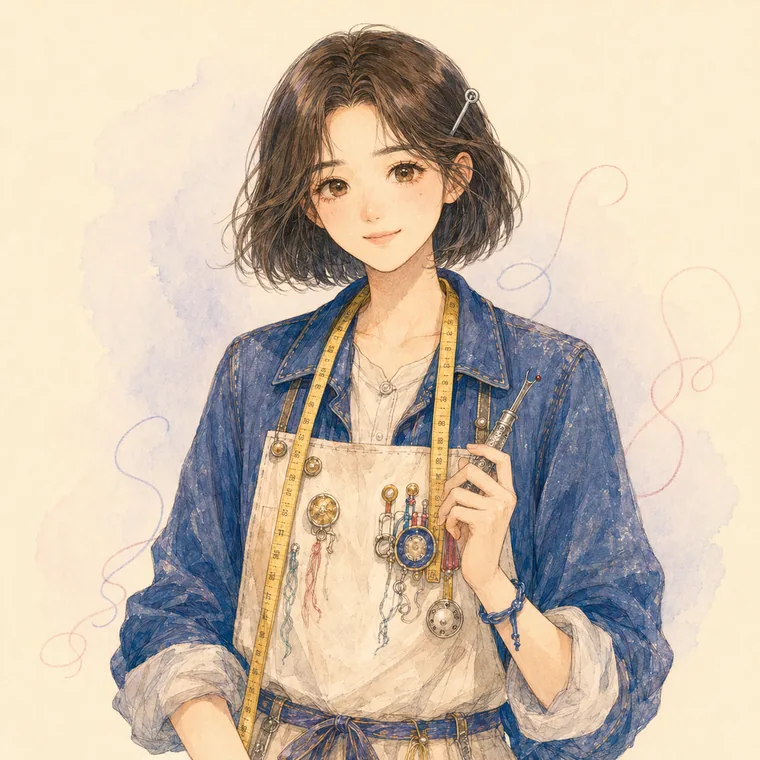
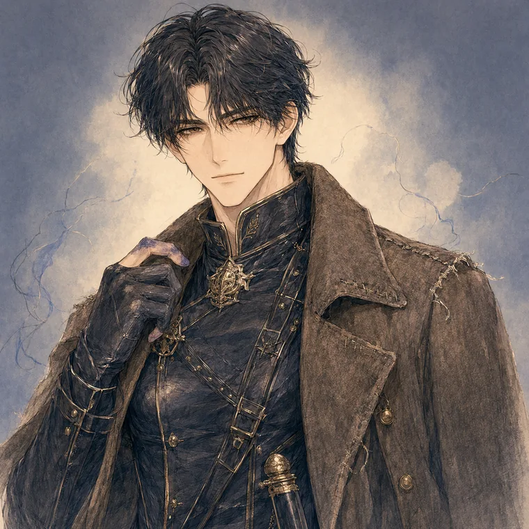
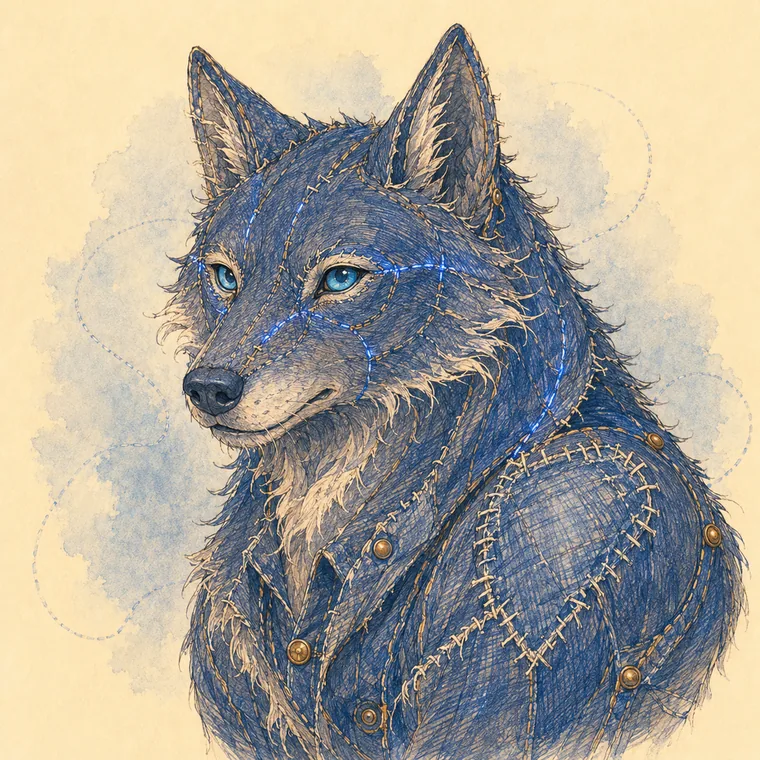
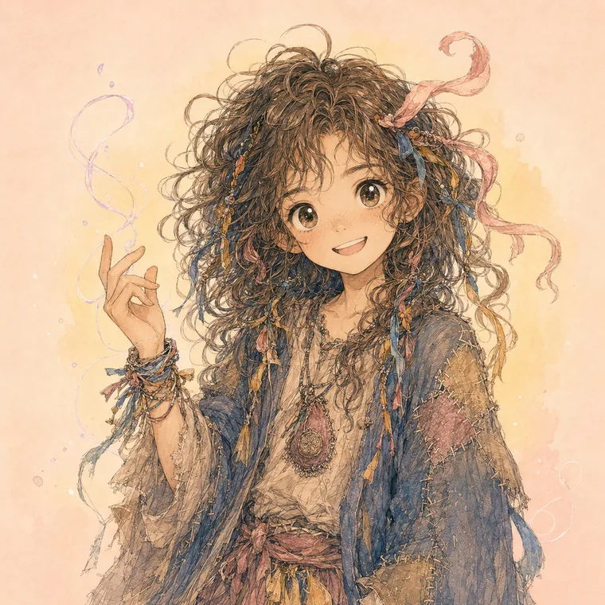

Press Kit
언론·제휴·서점용 자산입니다. 로고·캐릭터 키 비주얼·팩트 시트를 아래에서 확인하고, 전체 킷을 내려받으세요. 문의는 hello@textopia.world.
라이트/다크 워드마크 · 여백은 로고 높이의 50% 이상 · 색·비율 변경 금지.
기사·리뷰 사용 시 출처 표기(ⓒ Orsion) · 변형·합성 금지.




짧은 버전
시접출판사는 오르션의 출판 브랜드입니다. 코드를 짜는 사람과 옷을 짓는 사람이 AI를 세 번째 동료 삼아, 옷이 살아 숨 쉬는 세계 「텍스토피아」를 소설·아트·몰입형 웹으로 완성했습니다.
긴 버전
시접출판사(Seam Press)는 “낡은 것이 사랑받는 순간”을 짓는 AI 네이티브 인디 스튜디오입니다. 첫 작품 「텍스토피아」는 서울의 빈티지 샵 주인 강이서가 옷이 살아 숨 쉬는 세계에 떨어져, 버려져 성난 옷들의 마음을 한 땀씩 수선하는 전 3권 완결의 힐링 판타지입니다. 작은 팀이 이야기·아트·웹·자체 도구까지 끝까지 만들어, 조용한 위로의 브랜드를 지향합니다.